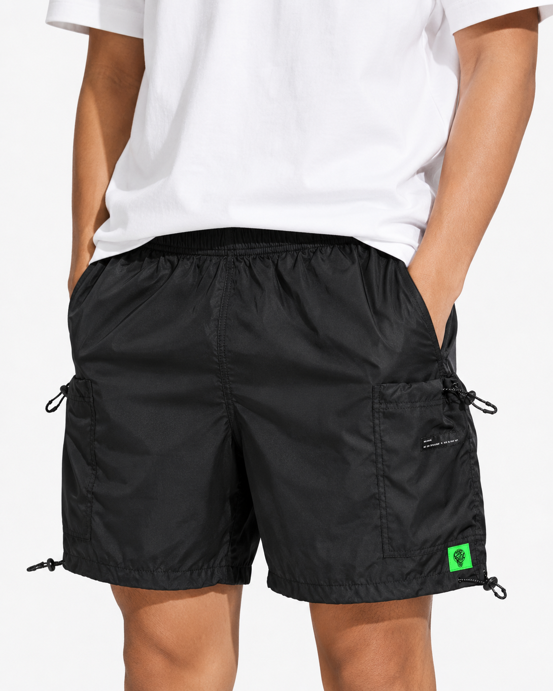

Celana pendek dari bahan Nilon Ripstop. Ringan, cepat kering, dan enak dipakai untuk gerak aktif. Cocok untuk nongkrong, riding santai, olahraga ringan, dan aktivitas luar ruang. Tidak banyak klaim, yang penting fungsinya jelas.
| Bahan | Nilon Ripstop |
| Fitur | Quick-dry, anti-sobek |
| Saku | 2 saku samping + 1 saku belakang |
| Ikat Pinggang | Drawstring + velcro adjuster |
| Potongan | Regular fit, panjang di atas lutut |
| Origin | Made in Jawabarat 🇮🇩 |
| Size | Lingkar Pinggang (cm) | Lingkar Pinggul (cm) | Panjang Celana (cm) | Paha (cm) |
|---|---|---|---|---|
| S | 70–74 | 88–92 | 48 | 56 |
| M | 74–78 | 92–96 | 50 | 58 |
| L | 78–82 | 96–100 | 52 | 60 |
| XL | 82–86 | 100–104 | 54 | 62 |
| XXL | 86–90 | 104–108 | 56 | 64 |